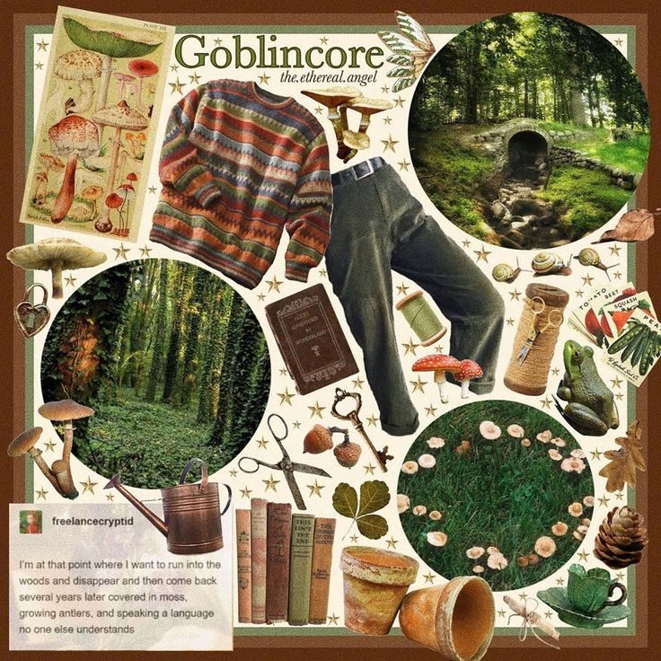
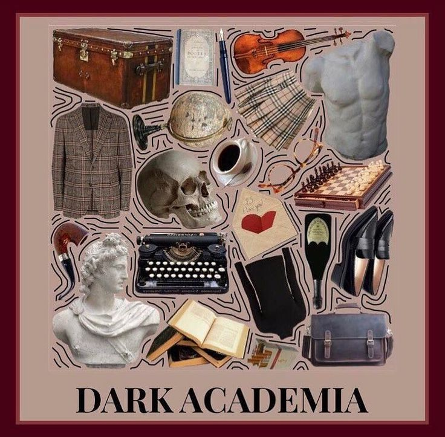
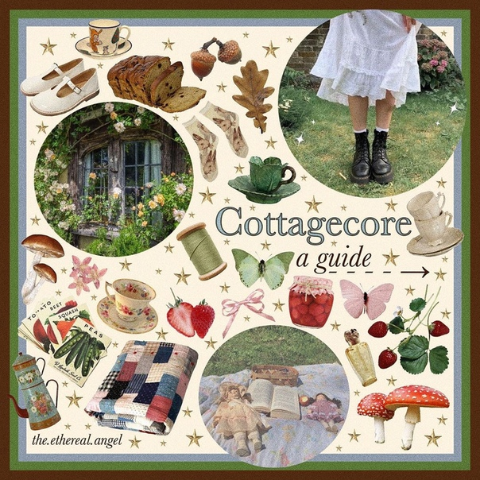
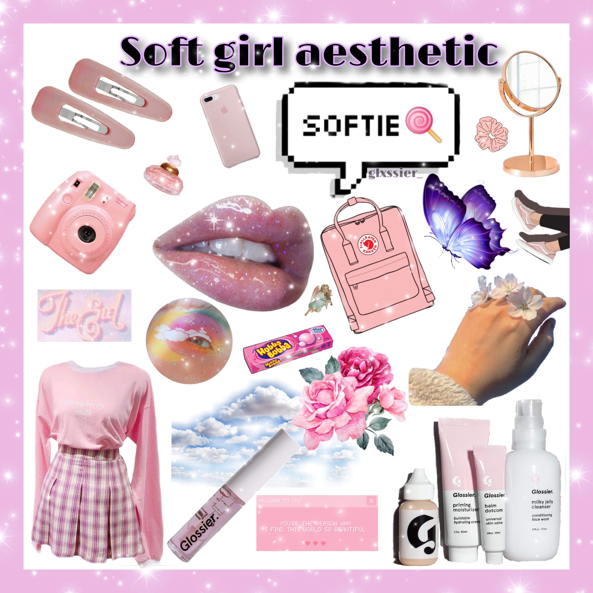
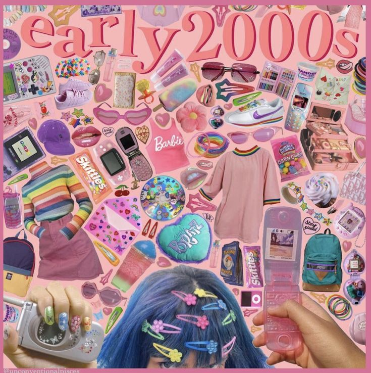
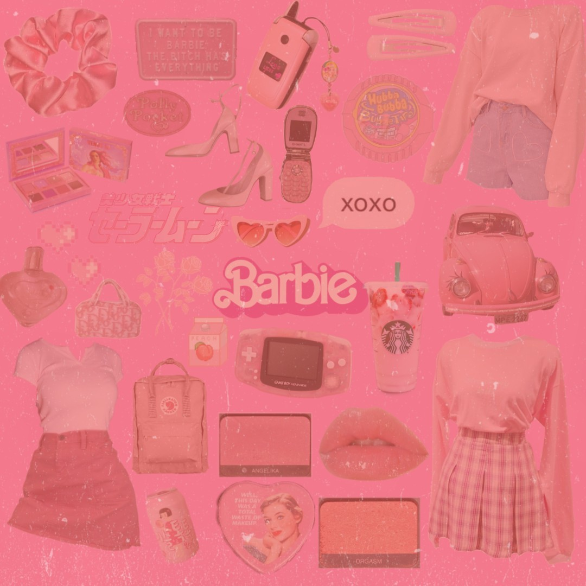

Эстетика
Эстетика (от греч.
aisthetikos — "чувствующий", "чувственный") — это наука о вкусе и красоте.
В философии эстетика изучает то, как человек с помощью творчества переживает реальность и познаёт её, что вызывает у него чувства удовлетворения и блаженства, а также чувство единения с миром или Богом.
В этом более узком плане эстетика — это то, как человек чувственно понимает реальность через музыку, технологии (например, фотографию), природу или еду.
То как эти вещи влияют на человека и, наоборот, как человек относится к ним. То как они формируют новое сознание — эстетическое. Оно построено на чувственном отношении человека, на его способности видеть и переживать красоту, совершенство, элегантность, безобразие больше, чем внутреннее содержание предмета.
Эстет — это человек, который:
- Поддерживает идеи эстетизма
- Ценит красоту и изысканность искусства и вещей в целом
• Goblincore
• Dark Academia
• Cottagecore
• Cryptidcore
• E-girl
• Soft-girl
• Adventurecore
• Kidcore
• Barbiecore
• Angelcore

Goblincore - эстетика, которая вытекает из "dragoncore". Гоблинкор воспевает не только безупречные драгоценные камни, ослепительные металлы и тщательно хранимые сокровища, но и поврежденные монеты, прохладные камни, кусочки металлолома, возможно, даже бусины, жучки и пуговицы. Эта эстетика прославляет аспекты природы, которые большинство сочло бы "уродливыми" или грязными начиная от животных, таких как лягушки и улитки, и заканчивая материалами, как мох, грязь и грибы.
У последователей гоблинкора часто есть коллекции маленьких безделушек, которые они нашли в лесу или где-то еще, состоящие из камней, мха, палок, коряг, кристаллов, пуговиц, свечей, булавок, маленьких костей или черепов, на самом деле всего, что привлекает их внимание.
Широкая ветвь эстетики гоблинкора посвящена дружбе с лесом и его обитателями. По их мнению, маленьких существ, такие как лягушки или саламандры, могут принести счастье и удовлетворение.

Dark Academia - эстетика, которая вращается вокруг классической литературы, стремления к самопознанию и общей страсти к знаниям и обучению. Это одна из нескольких вариаций, каждая из которых имеет уникальную историческую направленность. Самые известные визуальные вариации Темной академии происходят в основном из европейских культур.
Приверженцы этой эстетики читают классику, стремятся выглядеть как студенты Оксфордского университета и проводят вечера за философскими беседами — в общем, стараются быть похожими на студентов университетского романа в эпоху, когда учеба преимущественно перешла в онлайн. Узнать представителя «темной академии» легко по кардигану, твидовым штанам и винтажному портфелю.

Cottagecore – эстетика, вдохновленная романтической интерпретацией западной сельскохозяйственной жизни. Он сосредоточен на идеях вокруг более простой жизни и гармонии с природой. Жизнь в мире с окружающей средой и забота о людях.
Несмотря на то, что многие его последователей часто придерживаются прогрессивного и подрывного взгляда на жизнь, коттеджкор также подвергался критике за свой романтизм евроцентрической фермерской жизни. Его так же критиковали в контексте североамериканских и австралийских условий, непреднамеренного празднования эстетики колониализма, а также того, как он часто упрощает и недооценивает труд фермеров. Именно из-за такого скрытого смысла использование эстетики коттеджкор было принято сообществом TradWives(традиционные жены) и членами ультраправых как формы пропаганды.
Cryptidcore - это эстетика, традиционно связанная с криптозоологией, или изучением существ из городских легенд и фольклора, а также прославлением и обожествлением криптидов, заговоров и всеобщей тайны. Cryptidcore также, вообще говоря, довольно винтажный и черпает вдохновение из 1970-х-90-х.
Еще одним аспектом cryptidcore является романтизация криптидов. Фразы типа "Мотылек реален, я замужем за ним" не редкость в кругах криптидкора.
Electronic girl – эстетика сочетает в себе мрачный готичный образ с радостными кавайными вкраплениями. E-girl всегда online. Геймеры-косплейщицы часами просиживают в TikTok. В их стилистике – аниме, азиатская К-рор культура, элементы эстетики эмо.

Softgirl - это модный стиль, основанный на нарочито милом, женственном образе. Это популярно среди некоторых молодых женщин в социальных сетях. Она, наряду с E-Girl и VSCO Girl, стала невероятно популярной на TikTok.
Adventurecore - эстетика, которая включает в себя приключения, великое неизвестное и исследование. Главная тема и философия - это поощрение любопытства и стремление увидеть все это. Первоначальный создатель, пользователь Tumblr advenchurre (теперь деактивированный), заявил: "Речь идет об идее навигации по миру, как будто вы протаг, собирающийся отправиться в большое путешествие по пересеченной местности. Даже если вы живете в пригороде".

Kidcore - это эстетика, которая сосредоточена вокруг ярких цветов, ностальгии по иконам 90 - х годов и/или детских тем. Хотя его происхождение можно проследить до 1990-х годов, похоже, что эстетика-это ностальгическое творение 2010-х.
Общие мотивы - яркие цвета, часто используемые на детских игрушках, чаще всего очень насыщенные версии основных цветов (красный, желтый и синий), изображения крытых игровых площадок, мягкие игрушки, такие как beanie babies и TY, роботы-домашние животные, такие как Furbys, "наивное" пушистое искусство/анимация, произведения Лизы Франк, радуги и другие детские темы.

Barbiecore - это эстетика, вдохновленная модной куклой Mattel Barbie. Он включает в себя ощущение нахального, блестящего стиля и эстетики McBling. Barbiecore похож на Baddies, с идентичной чертой отношения "я-делаю-что-хочу".
Эстетика также включает в себя "девчачьи" телесериалы 2000-х годов (например, Лиззи Макгуайр, Ханна Монтана и т. д.), а также винтажные продукты для макияжа, такие как LipSmacker.
В начало страницы